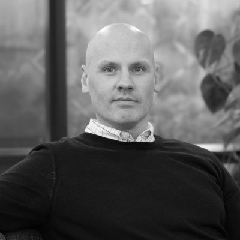
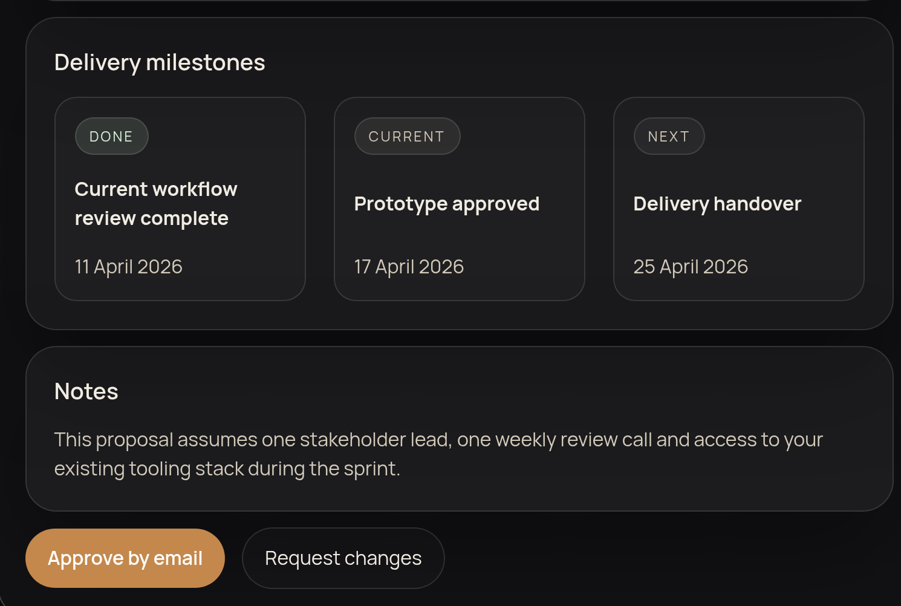

I build software for work still done by hand, get AI into daily use with your staff, and take responsibility for technology decisions when there is no CTO.

John ByrneSoftware Engineer, AI Expert, Fractional CTO.A process still done by hand. A tool that does not exist. A system held together by one person.
I find the manual work, build the replacement and keep it running. You own the result.
You have seen the demos and perhaps paid for a pilot. Nothing is in daily use.
I pick a useful application, build it into your staff’s daily work, and put checks in place so you know when it needs attention.
No CTO. An agency nobody can challenge. Decisions nobody is qualified to make.
I review suppliers, set technical priorities and help you decide what to build, buy or change.
A process still done by hand. A tool that does not exist. A system held together by one person.
I find the manual work, build the replacement and keep it running. You own the result.
I look at where the week actually goes and what you are renting. You get a short written read on what to build first, what to leave alone, and which subscriptions you no longer need.
Something running in the first week, not a document about it. The spreadsheet retires when the tool has proved itself in front of the people who use it.
Logging, access control, backups, and a clear answer to what happens when it fails. This is the part most people skip, and it is why tools quietly stop working.
You have seen the demos and perhaps paid for a pilot. Nothing is in daily use.
I pick a useful application, build it into your staff’s daily work, and put checks in place so you know when it needs attention.
The repetitive half of marketing work. Producing, reformatting, scheduling and reporting on content, so the team spends its time on the part that needs a person.
Reading, sorting and answering the things that arrive every day. Moving data between systems that do not talk to each other.
If you have developers, this is where AI pays off fastest. A team that is genuinely fluent with it is worth more than any single clever pilot.
No CTO. An agency nobody can challenge. Decisions nobody is qualified to make.
I review suppliers, set technical priorities and help you decide what to build, buy or change.
Someone who can read the proposal, the invoice and the code, and tell you what is fair and what is not.
A short written plan for the next period, in plain language, that any competent engineer could pick up and run.
Decided with you, with the costs and risks laid out, including which subscriptions to cancel.
A fixed part of each week on your side of the table, with the habits of a CTO and the hands of an engineer.
Every tool needs access to something: your inbox, your customer records, your systems. That is exactly why it should be built by someone who has been responsible for it going wrong.
Least privilege, credentials never sitting in a spreadsheet or a script, and a record of what has access to what.
Knowing where personal data goes, what a third-party AI service does with it, and being able to answer that question when someone asks.
Maybe you just want to know what a tool is doing with your data, or what is safe to paste into it. Ask me.
Where each client signs in and sees only their own material: packs, quotes, documents, invoices.
| What it is | The private place each client reviews their project packs and invoices |
|---|---|
| Access | Per client. Nobody sees another client’s files. |
| Sent by the system when a pack or invoice is ready | |
| Built | 2026, by me, for Noventis |
Also running: Labs, nineteen experiments in code, at noventisdigital.co.uk/labs.

Not an exhaustive list, and much of it under NDA. It shows the range of businesses I have built inside.
I have spent my career as a software engineer, then running engineering teams, then as a CTO. Automation and AI are what I point that experience at now.
I came to AI after learning how software actually gets shipped and maintained, not the other way round. My work includes security, deployment, backups and maintenance.
Noventis is where I do that work for a small number of outside clients. If it is not the right fit, I will say so and point you at someone who is.
| Based | East Midlands, UK. Liverpool born and bred. |
|---|---|
| Software first | Engineering, then engineering management, then the CTO seat. I came to AI after learning how software actually gets shipped and maintained. |
| Genuinely into the technology | Not a recent convert. I build the side projects and form my own opinions rather than repeating a vendor’s. |
| Gamer and modder | Long-standing Fallout fan, and I mod it. |
| Guitarist | Music is the other half of my life. I do not do AI music. |
| And finally | Liverpool FC, for better or worse. |
A short message will do. No obligation. You do not need a technical brief or to choose a route.
It either ends with a clear next step or an honest “this isn’t for me, here’s who you should talk to instead.”
| hello@noventisdigital.co.uk | |
| Site | noventisdigital.co.uk |
| linkedin.com/in/jmbyrne |